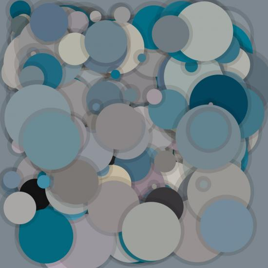

This script picks randomcolors from images. In this case a dolphin.
Just create a new folder, trow some pics in the folder, and change the document names in the script.
Enjoy
size(600,600)colormode(RGB,250)
coreimage= ximport("coreimage")
canvas= coreimage.canvas(600,600)# A list with all document names you put in the folder (in this example the folder is called images/)
animals = ["dolfijn", "eekhoorn", "giraf", "koe", "kameel", "kameleon", "neushoorn", "olifant", "tijger", "toekan", "uil", "vos", "zebra"]# Let nodebox choose a picture from the images folder
chooseanimal = choice(animals)print chooseanimal
img = canvas.layer("images/"+chooseanimal+".jpg")
w, h = img.size()
pix = img.pixels()# A for loop with 300 circles, where the circle's color is taken from a random pixel from the image.for i inrange(300):
r,g,b = pix.get_pixel(int(random(w)),int(random(h)))background(r,g,b)fill(r,g,b)
d = random(10,150)
x = random(WIDTH-120)
y = random(HEIGHT-120)oval(x,y,d,d)# Draws a shadowfill(0,28)nostroke()oval(x-10,y-10,d+18,d+18)reset()


Colorpicker
Posted by FredericAlbers on Jun 11, 2007
This script picks randomcolors from images. In this case a dolphin.
Just create a new folder, trow some pics in the folder, and change the document names in the script.
Enjoy